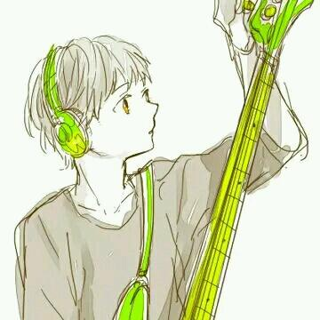

绝对定位居中(Absolute Centering)技术
优点：
- 支持跨浏览器，包括IE8-IE10.
- 无需其他特殊标记，CSS代码量少
- 支持百分比%属性值和min-/max-属性
- 只用这一个类可实现任何内容块居中
- 不论是否设置padding都可居中（在不使用box-sizing属性的前提下）
- 内容块可以被重绘。
- 完美支持图片居中
缺点
- 必须声明高度（查看可变高度Variable Height）。
- 建议设置overflow:auto来防止内容越界溢出。（查看溢出Overflow）。
- 在Windows Phone设备上不起作用。
一.容器内
父容器设置为position:relative
二.视区内
fixed定位，在视区内水平垂直居中
三.边栏
可以将内容块固定与屏幕的左侧或右侧，并且保持内容块垂直居中。使用right:0;left:auto;固定于屏幕右侧，使用left:0;right:auto;固定与屏幕左侧。
四.响应式/自适应
绝对居中最大的优势应该就是对百分比形式的宽高支持的非常完美。甚至min-width/max-width 和min-height/max-height这些属性在自适应盒子内的表现也和预期很一致。
五.溢出居中
加上overflow: auto会在内容高度超过容器高度的情况下给内容块显示滚动条而不越界。
内容高度大于块元素或容器（视区viewport或设为position:relative的父容器）会溢出，这时内容可能会显示到块与容器的外面，或者被截断出现显示不全（分别对应内容块overflow属性设置为visible和hidden的表现）。 加上overflow: auto会在内容高度超过容器高度的情况下给内容块显示滚动条而不越界。
六.重绘居中
可以使用其他class类或javascript代码来重绘内容块同时保证居中，无须手动重新计算中心尺寸。当然，你也可以添加resize属性来让用户拖拽实现内容块的重绘。
七.图片居中
绝对居中（AbsoluteCentering）也适用于图片。对图片自身应用class类或CSS样式，并给图片添加height:auto样式，图片会自适应居中显示，如果外层容器可以resize则随着容器的重绘，图片也相应重绘，始终保持居中。

八.可变高度
浏览器兼容性不太好
浏览器兼容性不太好，若Modernizr不能满足你的需求，你需要寻找其他方法解决。 1.与上述重绘(Resizing)情况的方法不兼容 2.Firefox/IE8:使用display:table会使内容块垂直居上，不过水平还是居中的。 3.IE9/10: 使用display:table会使内容块显示在容器左上角。 4.Mobile Safari:内容块垂直居中；若使用百分比宽度，水平方向居中会稍微偏离中心位置。
其它居中实现技术
绝对居中（Absolute Centering）是一种非常不错的技术，除此之外还有一些方法可以满足更多的具体需求，最常见的推荐：NegativeMargins, Transforms,Table-Cell, Inline-Block方式和新出现的Flexbox.方式。
- 一.负外边距(Negative Margins)
-
这或许是当前最流行的使用方法。如果块元素尺寸已知，可以通过以下方式让内容块居中于容器显示： 外边距margin取负数，大小为width/height（不使用box-sizing: border-box时包括padding，）的一半，再加上top: 50%; left: 50%;
- 二.变形（Transforms）
-
这是最简单的方法，不近能实现绝对居中同样的效果，也支持联合可变高度方式使用。内容块定义transform: translate(-50%,-50%)必须带上浏览器厂商的前缀，还要加上 top: 50%; left: 50%;
- 三.表格单元格（Table-Cell）
-
总的说来这可能是最好的居中实现方法，因为内容块高度会随着实际内容的高度变化，浏览器对此的兼容性也好。最大的缺点是需要大量额外的标记，需要三层元素让最内层的元素居中。
- 四.行内块元素（Inline-Block）
-